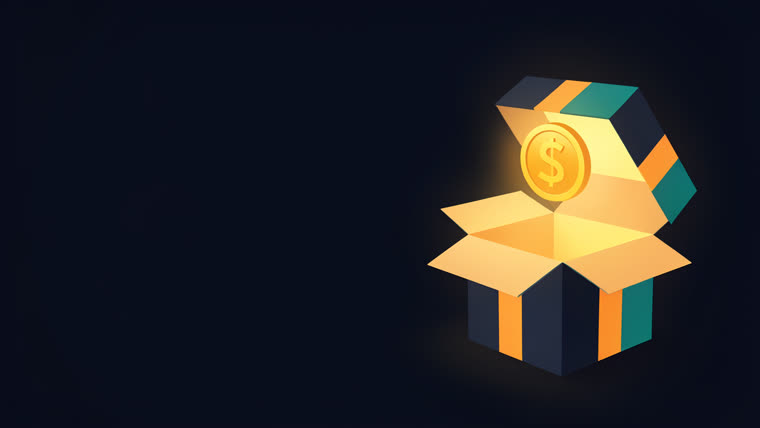

Entra um link ou assunto; sai um vídeo em 3 camadas, narrado, em 16:9 e 9:16. Tudo local, sem chave de API.
O videoprodutor coordena as peças que já existem no ecossistema — plano, roteiro, revisão de texto, voz, imagem, render — numa linha de montagem única. A skill é autocontida: traz o molde testado do gerador de 3 camadas, destilado do caso de referência "Hormozi 12 dicas".
Cinema (imagem com véu + parallax/ken-burns), texto cinético (GSAP) e ilustração do tópico (ícone/diagrama/contador). É o que separa vídeo profissional de slideshow.
Kokoro para a voz, flux2-klein local para a imagem, HyperFrames (Chrome + FFmpeg) para o render. Se o servidor de imagem estiver fora, o modo SVG assume sozinho.
O mesmo gerador emite os dois formatos; o vertical respeita as safe zones das redes (base e lateral direita livres da UI do app).
Cada etapa entrega um artefato concreto para a seguinte. O array AUDIO[] — as durações reais dos WAVs medidas pelo ffprobe — é a fonte única de timing: governa cena, animação e áudio ao mesmo tempo.
Fundo com profundidade: imagem gerada no flux2-klein com véu escuro + parallax/ken-burns. É a camada que dá peso ao quadro.
Número, título, barra e ênfase animados com GSAP. O movimento vem do código — a imagem nunca precisa se mexer sozinha.
Ícone, micro-diagrama ou contador que MOSTRA o que está sendo narrado, em vez de só decorar a tela.
O gerador consulta localhost:8000/health: servidor no ar → flux2-klein; fora → ícones SVG animados por tema. Nunca trava por falta de imagem.
Tela = PT-BR acentuado com o inglês na grafia original. Fala (txt/sN.txt) = números/siglas expandidos e o inglês reescrito foneticamente (deploy → "deplói").
Node, FFmpeg, HyperFrames e internet no render (o GSAP vem por CDN) são obrigatórios. Kokoro é obrigatório para a voz. O servidor de imagem e o vpe são opcionais — sem eles o pipeline segue no modo SVG.
HyperFrames verifica Chrome + FFmpeg. Obrigatório.
# checa o motor npx hyperframes doctor
Narração local com a voz pf_dora. Obrigatório para o áudio.
# checa o TTS python3 -c "import kokoro_onnx, soundfile"
flux2-klein na porta 8000 (camada 1). Opcional — tem fallback SVG.
# opcional curl -s localhost:8000/health
Node 22+, FFmpeg e o vpe (video-plan-editor, opcional) no PATH.
node -v ffmpeg -version | head -1 which vpe
Comece simples: uma cena-piloto, aprove o estilo, só então escale. Todos os comandos abaixo são os reais da skill (skills/videoprodutor/).
Confirme as dependências antes de gastar tempo com roteiro.
npx hyperframes doctor # motor de render (Chrome+FFmpeg) curl -s localhost:8000/health # imagem — opcional, tem fallback SVG python3 -c "import kokoro_onnx, soundfile" # TTS local node -v ; ffmpeg -version | head -1 ; which vpe
O vpe monta o esqueleto (preset, beats, tópicos, CTA). Preencha o JSON e valide.
vpe scaffold "<assunto>" --preset <suave|promo|vendas|viral|acao> \ --title "<título>" > plano-edicao.json vpe validate # plano-edicao.json válido
Escreva o SCRIPT.md e um arquivo de texto por cena. Na forma-fala, expanda números e siglas: "10×" vira "dez vezes", "R$500 mil" vira "quinhentos mil reais".
# um txt por cena
SCRIPT.md
assets/txt/s1.txt assets/txt/s2.txt ... assets/txt/sN.txt
Varra a acentuação palavra a palavra. Tela = PT-BR acentuado + inglês na grafia original; fala = inglês foneticamente. Acento errado contamina a tela e a locução. Checklist e léxico em references/revisao-texto.md.
# tela (camada 2 + caption): "fez o deploy do funnel" # fala (assets/txt/sN.txt): "fez o deplói do fânel"
Baixe as .woff2 na primeira vez, gere os WAVs com Kokoro e meça as durações — elas viram o array AUDIO[], a fonte única de timing.
node scripts/fetch-fonts.mjs # 1ª vez: Sora/Inter/JetBrains for i in $(seq 1 N); do npx hyperframes tts "assets/txt/s$i.txt" \ --voice pf_dora --speed 0.98 --output "assets/audio/s$i.wav"; done for i in $(seq 1 N); do ffprobe -v error -show_entries format=duration \ -of default=noprint_wrappers=1:nokey=1 "assets/audio/s$i.wav"; done # → cole as durações no AUDIO[] do gerador
Com o servidor no ar, gere as ilustrações (seeds fixos = reprodutível). Sem servidor, o modo SVG assume. Confira cada arte: o flux às vezes mete texto no quadro.
node scripts/gen-imgs.mjs # flux2-klein — ou deixe o modo SVG assumir
Copie scripts/composition-template.mjs como build-index.mjs e rode. Sem flag o modo é AUTO; --svg/--noimg/--img forçam. Valide antes do render caro.
node build-index.mjs # 16:9 (AUTO imagem→SVG) node build-index.mjs --vertical # 9:16 com safe zones npx hyperframes lint # 0 erros npx hyperframes inspect --samples 16 # 0 overflow # confira os frames de um draft antes de renderizar
Rebuild + render em cada formato. Como não dá para ouvir o áudio daqui, peça validação da locução ao usuário.
node build-index.mjs && npx hyperframes render --quality high \ --output renders/<nome>-16x9.mp4 node build-index.mjs --vertical && npx hyperframes render --quality high \ --output renders/<nome>-9x16.mp4
O vídeo "Hormozi 12 dicas" (videos/hormozi-12-dicas/) é a referência funcional de onde a skill foi destilada: 15 cenas narradas com Kokoro, 3 camadas, 16:9 e 9:16, rodando tanto com imagem quanto no fallback SVG. O repo também guarda experiments/remotion-ab/, um teste A/B em nível de código do que a skill remotion-best-practices muda no resultado.

A skill está em v0.2.0 e já produz vídeo ponta a ponta com o molde testado. O backlog completo, com as decisões ainda em aberto, vive em docs/06-decisoes-pendentes-e-backlog.md.
AUDIO[].plano-edicao.json estendido com caption cinético, illustration por beat, duration_mode e assets), integrador de b-roll com cache de seed, compositor dirigido por plano.